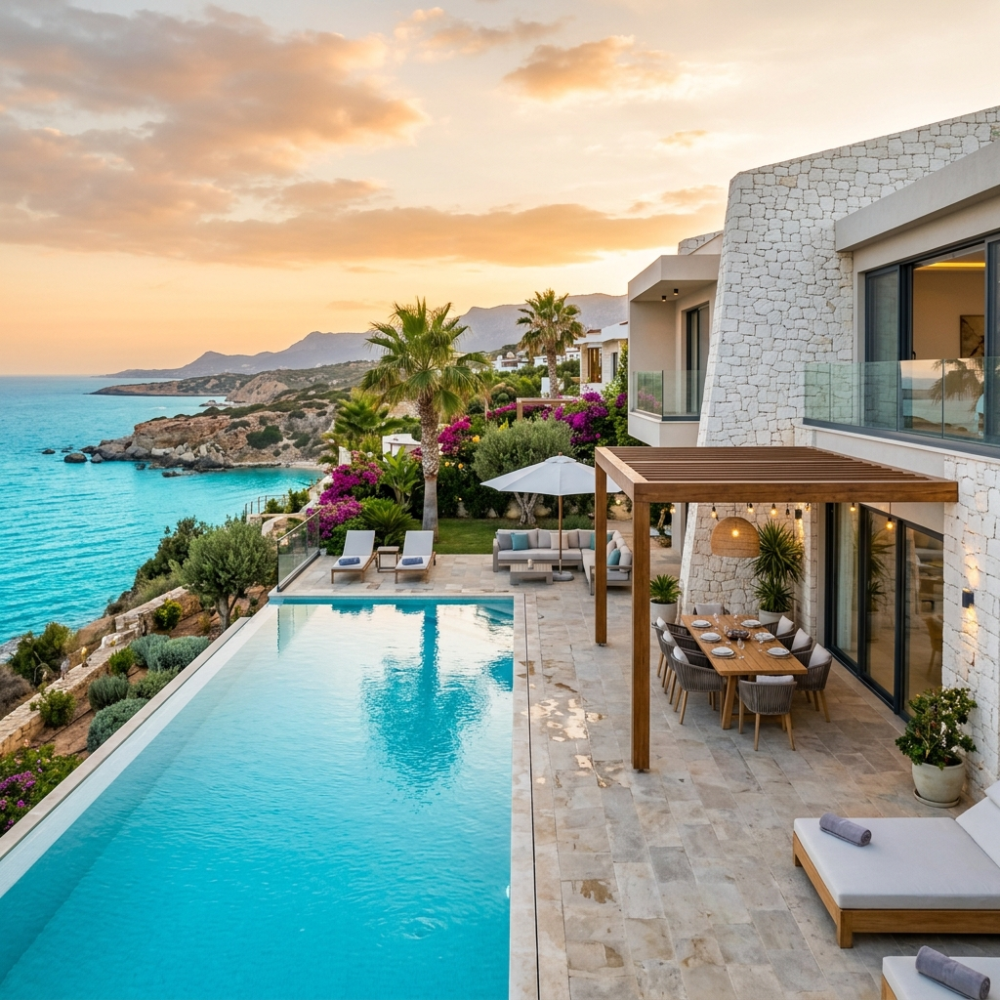

Bürokratische Überlastung, steigender Steuerdruck und staatliche Überwachung im DACH-Raum nehmen stetig zu. Wir konzipieren und begleiten deine maßgeschneiderte Exit-Strategie zur finanziellen, räumlichen und geschäftlichen Freiheit.
Der "kochende Frosch" merkt die Temperaturerhöhung erst, wenn es zu spät ist. Der Boiling Frog Index (Absurdistan-Score) misst die Dichte restriktiver Gesetze, Steuererhöhungen und Überwachungsmaßnahmen im DACH-Raum für das Jahr 2026.
Aktuelle Treiber: eIDAS 2.0 ID-Mandate, das EU-Lieferkettengesetz, verschärfte Krypto-Melderegeln ab Mitte 2026 und energetische Zwangssanierungsgesetze für Hausbesitzer.
Drei tragende Säulen, gestützt durch ein organisches Fundament aus fünf elementaren Freiheiten.
Wie unabhängig bist du wirklich? Bewerte die 4 Säulen deiner Freiheit und erhalte sofort deinen persönlichen Freiheits-Score sowie eine Handlungsempfehlung.
Wie sehr bist du aktuell von hohen Steuern und Inflation betroffen?
Wähle eine unserer Journeys, um dir persönliche und geschäftliche Handlungsfähigkeit zu sichern.
Unsere exklusive 8-Tage-Reise. Erlebe vor Ort das enorme Potenzial von Nordzypern: Premium-Immobilien ohne EU-Regulierung, steuerfreie Firmensetups mit Michael Schenk und modernste biometrische Gesundheitstechnologien.
Details & Programm ansehen
IN VORBEREITUNGDer physische Rückzugsort für freie Geister. Unabhängige Co-Living & Co-Working Hubs mit dezentraler Energieversorgung, Satelliten-Backup, P2P LoRa-Mesh-Netzwerken und Post-Quantum-verschlüsselter lokaler Kommunikation.
Nach erfolgreichem Abschluss deines Setups lassen wir dich nicht allein. Wir begleiten deine physische und geschäftliche Verlagerung.
Absolute Diskretion und Exklusivität. Anreise per Privatjet ohne Wartezeiten, persönliche Vor-Ort-Betreuung durch deinen Relocation-Officer und Chauffeur-Service in Premium-Vans (GLE/GLS Klasse). Vollständige Abwicklung aller Behörden-, Wohnsitz- und Bankangelegenheiten als Komplettservice.
Verfügbarkeit anfragenBegleitung in einer Kleingruppe für maximale Betreuungsqualität. Transfer in unserer Mercedes GLE/GLS Luxusflotte mit Chauffeur, geteiltem Butler-Service und Unterkunft in Premium-Villen. Die Kohorte im Oktober wird zum Schutz der Teilnehmerqualität auf zwei separate Wochen aufgeteilt (Gruppe 1 & Gruppe 2).
Platz reservierenJeder Weg ist individuell. Lass uns in einem vertraulichen Gespräch ermitteln, welche Route für deine persönliche, geschäftliche und familiäre Situation die sicherste ist.